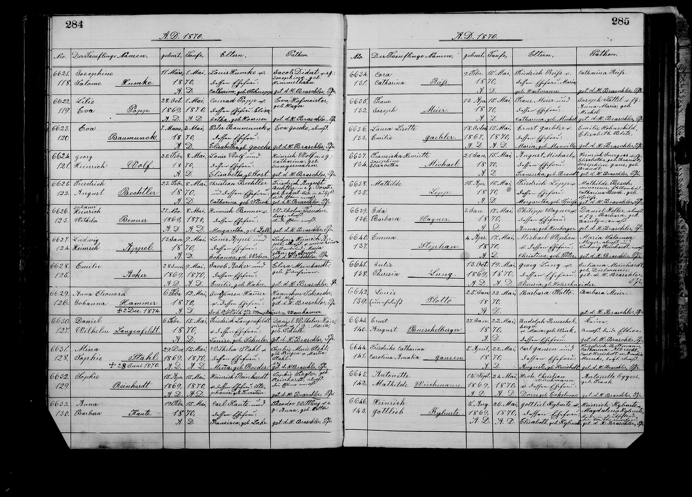

★ Auf einen Blick
Charles' angeheiratete Schwägerin — die Verlobte (und spätere Ehefrau) von Carl Kreichelt, als sie 1870 Patin bei der Taufe der Katherine Carolina war.
Forscheransicht (Quellen, Zitate, Fazit)
Katherine "Catharina" Albrecht (in St. Louis geboren) war die Verlobte — und zehn Monate später die Ehefrau — von Carl Kreichelt (Augustes Bruder) zu der Zeit, als sie 1870 Patin bei der Taufe der Katherine Carolina war. Tochter von Martin Albrecht und Catharine Wilhelmine Lieber. Die Heirat Albrecht-Kreichelt am 5. März 1871 — verbunden mit der Heirat ihrer Schwester Fredericka Albrecht mit Friedrich Pillmann am 5. April 1870, nur sieben Wochen vor dieser Taufe — verband die Familien Pillmann / Albrecht / Kreichelt zu einer einzigen Heiratskette. Das Kind Katherine Carolina trägt Catharinas Namen als zweiten Namen zu ihren Ehren.
Kurzfakten
| Kanonischer Name | Katherine Albrecht (Name der FamilySearch-Baumperson) |
| Eingetragen als | Catharina · Catherine · Anna "Katherina" Albrecht (das St.-Marcus-Taufregister von 1870 nennt sie Catharina Albrecht) |
| Geboren | 2. Juli 1850, St. Louis, St. Louis, Missouri, Vereinigte Staaten (7 Quellen) |
| Gestorben | 19. Dezember 1913, St. Louis, Missouri, Vereinigte Staaten (4 Quellen) — im Alter von 63 Jahren |
| Bestattet | 22. Dezember 1913, Saint Paul's Cemetery, St. Louis, Missouri |
| Vater | Martin Albrecht (1824–1875) · L5F1-WSH |
| Mutter | Catharine Wilhelmine Lieber (1825–1899) · L52J-CF8 |
| Heirat der Eltern | 18. August 1849, Holy Ghost Church, St. Louis, Missouri |
| Geschwister (Albrecht-Kinder, 6) | Katherine (sie selbst, 1850–1913, L5FV-3Z1) · Fredericka Albrecht (1851–1915) · GSTK-TGT — Ehefrau von Friedrich Pillmann · Magdalena Albrecht (1856–1878) · GSTK-5JF · Elisabeth Albrecht (1858–verstorben) · GSTK-TP3 · John Wilhelm Albrecht (1861–1891) · 2Z96-P5H · Emelia Albrecht (1864–1934) · GSTT-9PR |
| Ehemann | Charles "Carl" Heinrich Kreichelt (1846–1926) · L5FW-5LD |
| Heirat | 5. März 1871, St. Louis, Missouri, Vereinigte Staaten |
| Kinder (mit Carl) | 10 Kinder, darunter George Kreichelt (1871, L52J-NCQ), Martin Henry Kreichelt (1875–1944, L5F1-Z4V), Friederike Kreichelt (1876–1936, L52J-F5J), Louise Kreichelt (1878–1948, LH6M-LBK), Emilie Kreichelt (1881–1889, L5YS-VGB), Sophie Johanna Kreichelt (1882–1946, L5FJ-1JY), Charles Emil Kreichelt (1884) und weitere |
| Wohnorte | 1850 St. Louis (Geburt) · 1860 Randolph, Randolph, Illinois · 1880 St. Louis · 1910 St. Louis (letzter Wohnort) |
| FamilySearch-Profil | L5FV-3Z1 · 25 angehängte Quellen · 20 Erinnerungen |
Wo diese Patin im Kirchenbuch erscheint
Der Eintrag im St.-Marcus-Kirchenbuch, in dem diese Patin erscheint, in der zeitgenössischen Handschrift verzeichnet.

Verbindung zu Charles Gannsen & Auguste Kreichelt
★ Patin bei der Taufe der Katherine Carolina am 22. Mai 1870
Catharina Albrecht ist eine von vier genannten Paten bei der Taufe des dritten Kindes von Charles & Auguste am 22. Mai 1870 in der German Evangelical Church St. Marcus (Eintrag Nr. 6644, Registerseite 285). Die übrigen drei Paten sind Friedrich Pillmann (ihr frisch vermählter Schwager), Carl Kreichelt (ihr Verlobter) und Maria Emma Mincke (verzeichnet als "Amalia Münke" — bereits mit Augustes Bruder August Kreichelt verheiratet).
Der vollständige Taufname des Kindes Friedrike Catharina Caroline Amalia Gansen spiegelt die vier Paten unmittelbar wider: Friedrike für Friedrich Pillmann (oder seine Ehefrau Fredericka, Catharinas Schwester), Catharina für Catharina Albrecht selbst, Caroline für Carl Kreichelt und Amalia für Maria Emma Mincke (verzeichnet als Amalia Münke). Eine mustergültige hannoversch-lutherische Paten-Namensgeber-Struktur.
Der Heiratscluster Albrecht / Kreichelt / Pillmann 1870–1871
Die Taufe der Katherine Carolina liegt genau inmitten einer eng zusammenhängenden Folge von drei Hochzeiten, die die Familien Albrecht, Kreichelt und Pillmann verbinden:
| 5. April 1870 | Friedrich Wilhelm Pillmann × Fredericka Albrecht (Catharinas Schwester) — St. Louis, Missouri. Nur sieben Wochen vor der Taufe am 22. Mai 1870. Friedrich war bereits Pate bei der Taufe von Friedrich Wilhelm Gonnson 1866, doch 1870 trat er erneut als Pate auf, nun als Catharinas Schwager. |
| 22. Mai 1870 | Taufe der Friedrike Catharina Caroline Amalia Gansen (Katherine Carolina), St. Marcus, St. Louis — bei der Catharina Albrecht als Patin auftrat, während sie noch Verlobte von Carl Kreichelt war |
| 5. März 1871 | Carl Kreichelt × Catharina Albrecht selbst — St. Louis. Etwa zehn Monate nach der Taufe. Als Patin für das Kind der zukünftigen Schwägerin aufzutreten, während man noch verlobt war, war eine anerkannte Form vorehelicher Verwandtschaftsbildung in der deutsch-evangelischen Tradition; Catharina galt in den Augen der Gemeinde praktisch bereits als Familie, als sie im Mai 1870 am Taufbecken stand. |
Nach ihrer Heirat im März 1871 wurde Catharina Schwägerin von Auguste Kreichelt und angeheiratete Tante aller sieben Gannsen-Kinder. Sie und Carl hatten im Lauf der folgenden sechzehn Jahre (1871–1887) zehn gemeinsame Kinder.
📂 Vollständiges Forschungsprotokoll
Die Heiratskette Kreichelt ⟷ Albrecht ⟷ Pillmann
Die Taufe der Katherine Carolina 1870 ist der zentrale urkundliche Anker für das, was Jed und Peter Schräder im Dezember 2025 als das "Verwandtschaftsnetzwerk Kreichelt-Albrecht-Pillmann" identifizierten — drei untereinander verheiratete St.-Louis-Familien, die nahezu jeden genannten Paten von Nicht-Charles-Seite über die sieben Gannsen-Taufen hinweg (1866–1880) stellen.
- Catharina Albrecht (1850 St. Louis – 1913) ⟶ heiratet Carl Kreichelt (Augustes Bruder, geb. 1846 Clausthal, Hannover), 5. März 1871
- Fredericka Albrecht (1851 – 1915, GSTK-TGT, Catharinas Schwester) ⟶ heiratet Friedrich Pillmann (geb. 1846 Deutschland), 5. April 1870 — wodurch Friedrich zum Schwager von Carl Kreichelt wird
- Maria Emma Mincke alias "Amalia Münke" (1844 St. Louis – 1905, L52N-1PL) ⟶ heiratet August Kreichelt (Augustes anderen Bruder und einen Veteranen der Battery B)
Sobald diese drei Heiraten geschlossen waren (spätestens 1872), löste sich jeder "fremd klingende" Familienname in den Gannsen-Taufregistern — Albrecht, Pillmann/Billmann, Münke/Mincke — in ein einziges zusammenhängendes Netzwerk auf Augustes Kreichelt-Seite auf. Keiner der vier Paten bei der Taufe der Katherine Carolina 1870 stammt von Charles' deutscher Seite.
Bedeutung für die umfassendere Untersuchung
- Das Rätsel der "fremd klingenden Paten" ist gelöst. Bis Dezember 2025 wurden die Familiennamen Albrecht / Billmann / Münke bei der Taufe 1870 als mögliche Spuren auf Charles' Seite behandelt. Die Rekonstruktion der Heiratskette zeigt, dass sie alle in Wahrheit Deutschamerikaner der zweiten Generation aus St. Louis auf Augustes Kreichelt-Seite sind — womit dieser Untersuchungsweg zu Charles' deutscher Herkunft geschlossen ist.
- In Amerika geboren, keine Einwanderin. Catharina wurde 1850 in St. Louis als Tochter von Eltern Albrecht und Lieber geboren, die im Jahr zuvor in St. Louis in der Holy Ghost Church (deutsch-evangelisch) geheiratet hatten. Ihre Familie war über die Volkszählung von 1850 hinweg in der Stadt ansässig, mit einem kurzen Aufenthalt in Randolph County, Illinois (Volkszählung 1860), und kehrte bis 1880 nach St. Louis zurück. Sie gehört zum etablierten deutschamerikanischen Gesellschaftsnetzwerk von St. Louis, in das sich Augustes hannoversche Kreichelts eingliederten — nicht eine Neuankömmlingin aus derselben Region wie Charles.
- Namensgebungsmuster. Die Mittelnamen der Katherine Carolina (Friedrike Catharina Caroline Amalia) spiegeln unmittelbar ihre vier Paten wider. Das Gannsen-Kind Katherine Carolina ist daher Catharina Albrechts Namensgeberin; es ist einer der seltenen Fälle, in denen der Name eines Gannsen-Kindes direkt auf einen einzelnen, individuell identifizierbaren Paten zurückgeführt werden kann.
Quellen & Querverweise
- FamilySearch · Katherine Albrecht (L5FV-3Z1) · 25 Quellen
- St. Marcus Evangelical Church (St. Louis), Taufregister, S. 285, Nr. 6644 (22. Mai 1870, Friedrike Catharina Caroline Amalia Gansen) · FHL-Mikrofilm 1503034
- St.-Louis-Heiratsregister, 5. März 1871 (Carl Kreichelt × Catharina Albrecht)
- Holy Ghost Church (deutsch-evangelisch), St. Louis — Heiratseintrag der Eltern vom 18. August 1849
- Korrespondenz Jed × Peter Schräder, 16.–18. Dezember 2025 — der "relationship"-Strang, der die Familiennamen Albrecht / Pillmann / Münke zu einem einzigen Verwandtschaftsnetzwerk aus dem Raum Hannover auflöste
- → Seite zur Taufe der Katherine Carolina
- → Carl Kreichelt · → Friedrich Pillmann · → Amalia Münke / Maria Emma Mincke